Glass Apps
More than 100 small apps for your Mac, kept up to date in one place.
For Apple silicon and Intel Macs running macOS 14.2 or later. Some apps need a newer version of macOS.
How it works
- Download
Download Glass Apps and drag it into your Applications folder.
- Choose
Open it, browse or search the collection, and select the apps you want.
- Install
Click Install. Click Update All to update everything at once, or turn on automatic updates.
All 104 apps
Choose as many or as few as you like. You can come back to add another app at any time.
Productivity 28
Glass Agenda
Today's events on your desktop with what's on now highlighted and tomorrow underneath; click to open Calendar, one click to join a meeting.
Glass Ask
Apple Intelligence on your Mac in one click: summarize, proofread, rewrite, translate or ask about any text.
Glass Browser
A web browser with spaces, private windows and an assistant that can run on your Mac.
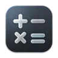
Glass Calc
A calculator you type into: answers as you type, scientific functions, graphs when you use
x, a 3D surface you can turn when you usexandy, your own variables, fractions, a history andans.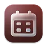
Glass Calendar
Your next event and a countdown in the menu bar, one click to join the call, a month view and alerts as calls start.
Glass Cards
Flashcards with spaced repetition (SM-2), decks, pasted lists and CSV import, and the cards due in the menu bar.
Glass Chat
Messages between the Macs on your network, straight from one to the other and sealed between them: no account, no server.
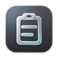
Glass Clipboard
Searchable clipboard history (passwords never kept). ⌘⇧V opens it anywhere and can paste straight into the app you're in.
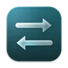
Glass Convert
Every unit at once, including astronomical ones (au, light-years, parsecs, solar masses).
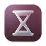
Glass Days
Countdowns to deadlines, trips and birthdays, with the nearest in the menu bar.
Glass Define
Definitions from the dictionaries built into macOS, with recent lookups.
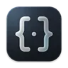
Glass Dev
Small tools for developers: format or minify JSON, decode a JWT, convert timestamps, Base64/URL/HTML encoding, hashes, UUIDs and case changes, all on your Mac.
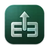
Glass Extract
Drop a PDF, a scan or a document and its tables and details come out as an Excel workbook, read on your Mac, with Apple Intelligence naming the details.
Glass Formats
Converts files dropped on it: pictures, PDFs, documents, video and sound, with what the Mac has built in (and presentations and spreadsheets through Keynote and Numbers, outside the App Store).
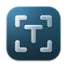
Glass Grab
Drag over anything on screen (⇧⌘2) and its text is copied, recognized on your Mac; reads QR codes too.
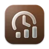
Glass Hours
Time in each app today and this week, with time away left out, daily limits and groups.
Glass Journal
A line a day with your mood, a streak, five weeks of dots and what you wrote on this day before.
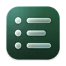
Glass List
A to-do list that stays on your desktop: type to add, click to finish, clear the done ones.
Glass Notes
Quick notes that save as you type (with plain-text copies in Application Support).
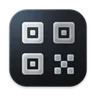
Glass QR
QR codes for links, text and Wi-Fi, copied or saved as PNG, and reading codes from images on the clipboard.
Glass Rates
Convert between 30 currencies as you type, from the European Central Bank's daily rates, with three months of history.
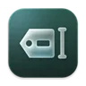
Glass Rename
Rename a folder's contents to snake_case (or kebab-case, Title Case), with a preview and undo.
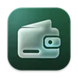
Glass Spend
Log expenses in two clicks, the month by category against a budget, and CSV export.
Glass Sticky
Sticky notes in glass on your desktop: as many as you like, in six colors and three text sizes, saved as you type.
Glass Text
Change case, trim, sort and dedupe lines, Base64/URL/HTML encoding, and pretty or minified JSON.
Glass To-Do
A quick to-do list with due times and reminders, overdue first, count in the menu bar.
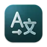
Glass Translate
Translate typed or pasted text with Apple's on-device translation (macOS 15), detect the source language, swap, copy or hear the result.
Glass Tutorial
Week of term, an agenda timer for tutorials, a fair random picker and a group maker.
System utilities 23
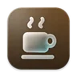
Glass Awake
Keeps your Mac awake for a while, until you stop it, until downloads finish, or while an app is open.
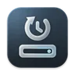
Glass Backup
Days since your last Time Machine backup, Back Up Now with live progress, a reminder when your backup drive is plugged in, and every drive's free space with eject.
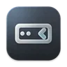
Glass Bar
Hides the menu bar icons you rarely need behind one arrow (⌥⌘B). On macOS 27 and later you choose the apps whose icons hide.
Glass Battery Health
Your MacBook battery's health over months and years: capacity and cycles on a chart with a smoothed trend, wear rate, a forecast of when it reaches 80%, milestone alerts and CSV export.
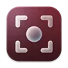
Glass Capture
Record part of the screen (⇧⌘6) or all of it to a sharp H.264 video; drag recordings into any app.
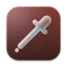
Glass Color
Pick any color on screen; copy it as hex, RGB, HSL, SwiftUI, AppKit or matplotlib, with contrast checks.
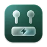
Glass Devices
Battery levels of everything connected to your Mac: AirPods (left, right, case), Magic Keyboard, Mouse and Trackpad, and the Mac itself, with a warning before one runs out.
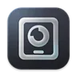
Glass Disk
How full each disk is, and what's taking the space: choose a folder and see its contents sized and sorted, biggest first, then drill in.
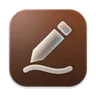
Glass Draw
Draw, highlight and point with arrows over anything on screen (⌃⌥D) while you teach or present, and spotlight the pointer.
Glass Gauges
Processor, memory, disk and network as small rings on your desktop, moving as your Mac works.
Glass Loupe
A magnifier that follows your pointer (⌃⌥L): 2× to 16×, a pixel grid and the color under the cursor as hex.
Glass Match
Makes a monitor look like your Mac's own screen, from a phone photo of the two side by side.
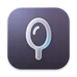
Glass Mirror
Your camera, mirrored, with a lighting check: the camera runs only while it's open.
Glass Net
Online status, latency, Wi-Fi signal, public and local IP, and speed tests (Apple's networkQuality; Cloudflare in the App Store version).
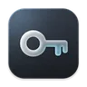
Glass Passwords
Strong passwords, passphrases and PINs from the secure random generator; copies are hidden from clipboard managers and cleared after a minute.
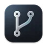
Glass Repos
Your GitHub repositories' latest Actions run, open pull requests and issues, and a notification when a build fails.
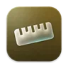
Glass Ruler
A floating screen ruler, a measure tool (distance, width and height) and guides, in points, pixels, cm or inches.
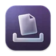
Glass Shelf
Start dragging files and a shelf appears at the right of the screen to park them on; drag them out later, or copy, AirDrop or move them all at once.
Glass Shield
One switch that blocks ads and trackers in every app, by DNS.
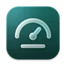
Glass Stats
CPU (per core), GPU, memory, network, disk, temperatures and fans, the apps working hardest, and live numbers in the menu bar.
Glass Tidy
Sort Downloads (or any folder) into Images, Documents, Videos and more; old files go to a Review folder, never the Trash.
Glass Tiles
Snap any window into place with ⌃⌥ and an arrow key (halves, quarters, thirds, centered, full screen, next display) or a click in the menu bar.
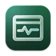
Glass Up
Watch websites and servers: status, response time, a strip of recent checks and an alert when one goes down.
Astronomy and research 15
Glass arXiv
New papers in your arXiv categories, keyword matches first, with alerts, saving and citations.
Glass BibTeX
DOI or arXiv ID to tidy BibTeX with a Surname-Year key, and \citep{key} in one click.
Glass Citations
Your citations and h-index in any field through OpenAlex (PubMed, arXiv, Crossref and more), or from NASA ADS for astronomy; the papers citing you lately, and a note when a new one appears.
Glass Constants
CODATA 2022 and IAU 2015 constants in SI or cgs, copied as numbers or astropy expressions.
Glass Cosmo
Ages, lookback times and distances at any redshift (Planck 2018, WMAP9 or your own cosmology), plus RA/Dec and galactic conversions, and a Units tab with every astronomy unit (distance, angle, mass, time, speed, energy, luminosity, flux density, density, photon wavelength/frequency/energy).
Glass FITS
Drop a FITS file: every HDU's header, and an image preview with zscale and asinh stretches.
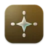
Glass Flux
AB magnitudes ↔ fluxes, luminosities at any redshift, and star formation rates from FUV, NUV, Hα, 24 μm and TIR (Kennicutt & Evans 2012).
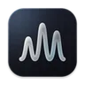
Glass Lines
Where 70 spectral lines land at any redshift, which survey filters they fall in, and what an observed line could be.
Glass Notebooks
Your running Jupyter servers and notebooks: start JupyterLab in a folder, open, interrupt, restart or shut down; see how long a kernel has been running, and get a notification when a long run finishes.
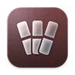
Glass Palettes
Color-blind-safe palettes, simulated for protan, deutan and tritan vision, copied for matplotlib or Plotly.
Glass Sigma
σ ↔ p-values, χ² probabilities, Poisson limits (Gehrels 1986) and error propagation.
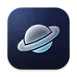
Glass Sky
Tonight's Moon, darkness, cloud forecast, visible planets, the best deep-sky targets (galaxies, nebulae, clusters) and Space Station passes, with alerts.
Glass Symbols
Greek, maths and astronomy symbols, and LaTeX to Unicode (M_\odot → M☉).
Glass Target
Resolve any object name (CDS Sesame), see a survey image, tonight's altitude from your site, and jump to Legacy, SDSS, NED, SIMBAD, Aladin or ADS.
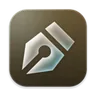
Glass Writing
Words written today in your .tex or .md manuscript, a streak, and words a day to reach your deadline.
Time and wellbeing 15
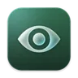
Glass Breaks
Eye-rest (20-20-20) and stretch reminders that count time away as a break.
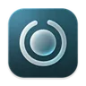
Glass Breathe
A breathing orb that grows and shrinks to a calm, box or 4-7-8 rhythm; follow it for a minute, with optional reminders.
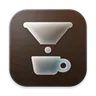
Glass Brew
Pour-over coffee timer: water for your dose and ratio, then each pour as it comes (V60, Kalita, Chemex, drip machine, espresso, moka pot, AeroPress, French press, cold brew).
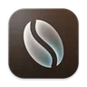
Glass Caffeine
Log coffees; caffeine in your system now, at bedtime, and the last time for another cup.
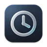
Glass Clock
A desktop clock with seven analog faces (classic, minimal, numerals, Roman, railway, dots, night) and seven digital ones (rounded, thin, serif, terminal, stacked, flip, in words), and a second city underneath.
Glass Countdown
Count down to the things you're looking forward to, with a ring that fills as the day gets closer and confetti when it arrives.
Glass Focus
Focus timer with breaks, a weekly chart and streaks; can turn on a Focus mode through Shortcuts.
Glass Habits
Daily habits with streaks and a week of dots, progress in the menu bar, and an evening reminder.
Glass Ring
A Pomodoro ring on your desktop: focus, short breaks, long breaks, rounds counted, a chime and a notification at each change.
Glass Routine
Your morning (or evening) routine as a checklist that resets every day, with a streak for finishing it.
Glass Tally
Counters on your desktop for anything worth counting, with goals and daily or weekly resets, and this week's totals.
Glass Time
World clocks with a time-zone converter, plus UTC, local sidereal time, Julian date and MJD.
Glass Timers
As many named timers as you like, the next one counting down in the menu bar, and a stopwatch with laps.
Glass Water
One-click drink logging toward a daily goal, gentle reminders if it's been a while, and a week chart.
Glass Year
The year as 365 dots, a month grid or a week row, the days that have passed filled in; click to switch.
Nature and desktop 11
Glass Aurora
The chance of seeing the aurora where you are (NOAA OVATION), Kp now and for three days, solar wind and alerts.
Glass Bonsai
A bonsai that grows a little each day you water it, through the seasons; let it be or start a new tree.
Glass Frame
A photo frame that shows a folder of your pictures, one at a time with a gentle drift, at the interval you choose.
Glass Koi
A koi pond on your desktop: koi glide under lily pads, each with its own markings; click the water to feed them. It darkens at night.
Glass Moon
Tonight's Moon drawn with its real phase, the next full and new moons, sunrise, sunset, moonrise and moonset for where you are, and the planets that are up.
Glass Pet
A little creature in a glass widget on your desktop. Feed it (meals or snacks), play the left-or-right game, clean up after it, put it to bed; its eyes follow your pointer. It grows from an egg over ten days into a starry, leafy or grumpy adult depending on its care, and cheers when you finish a Glass Focus session.
Glass Quakes
The latest earthquakes worldwide and near you from the USGS, with alerts for big or nearby ones.
Glass Quote
A quote a day on your desktop, from a collection of 150 with their authors, or your own; copy it with a click.
Glass Scene
A small window onto somewhere else: rain, snow, stars, fireflies, an aurora or the sea, with the light of the time of day.
Glass Weather
The temperature in your menu bar; a click shows now, the next 24 hours and the week ahead, with rain, wind, UV, sunrise and sunset, for your location or any city.
Glass Word
A word a day on your desktop, with its meaning, pronunciation and an example; click it for the full dictionary entry and save the ones you like.
Audio 9
Glass EQ
A system-wide audio equalizer with headphone correction and listening presets.
Glass Memo
Voice memos (⌃⌥R) turned into text on your Mac, searchable, with playback and drag-out audio.
Glass Metronome
Sample-accurate clicks from 20 to 300 BPM, tap tempo, accents and subdivisions.
Glass Mixer
Volume, mute and output for each app; late-night mode evens out loud and quiet. Works alongside Glass EQ.
Glass Mute
Mute your microphone in every app with ⌃⌥M; hold it to talk while muted.
Glass Pad
A piano and a drum pad on your desktop; click the keys or play them from your keyboard, with five sounds.
Glass Read
Reads to you: press ⌃⌥S and whatever you've copied is read aloud with any voice on your Mac, each sentence highlighted as it goes.
Glass Sounds
Rain, ocean, wind, a fan and white, pink or brown noise, made live and mixable, with a sleep timer.
Glass Tuner
A chromatic tuner with a needle and cents, guides for guitar, bass, ukulele, violin and cello, and an adjustable A4.
Sports and games 3
Glass Dice
Dice (one to six), a coin and a spinning wheel with your own options, for every decision you'd rather not make yourself.
Glass Lineup
Fair rec-softball lineups: even bench time, captains one more inning, experienced players at 1B, SS and CF, rovers, and a batting order.
Glass Puzzle
The classic sliding puzzle in glass on your desktop: numbers or your own picture, 3×3 to 5×5, with your best moves and time.